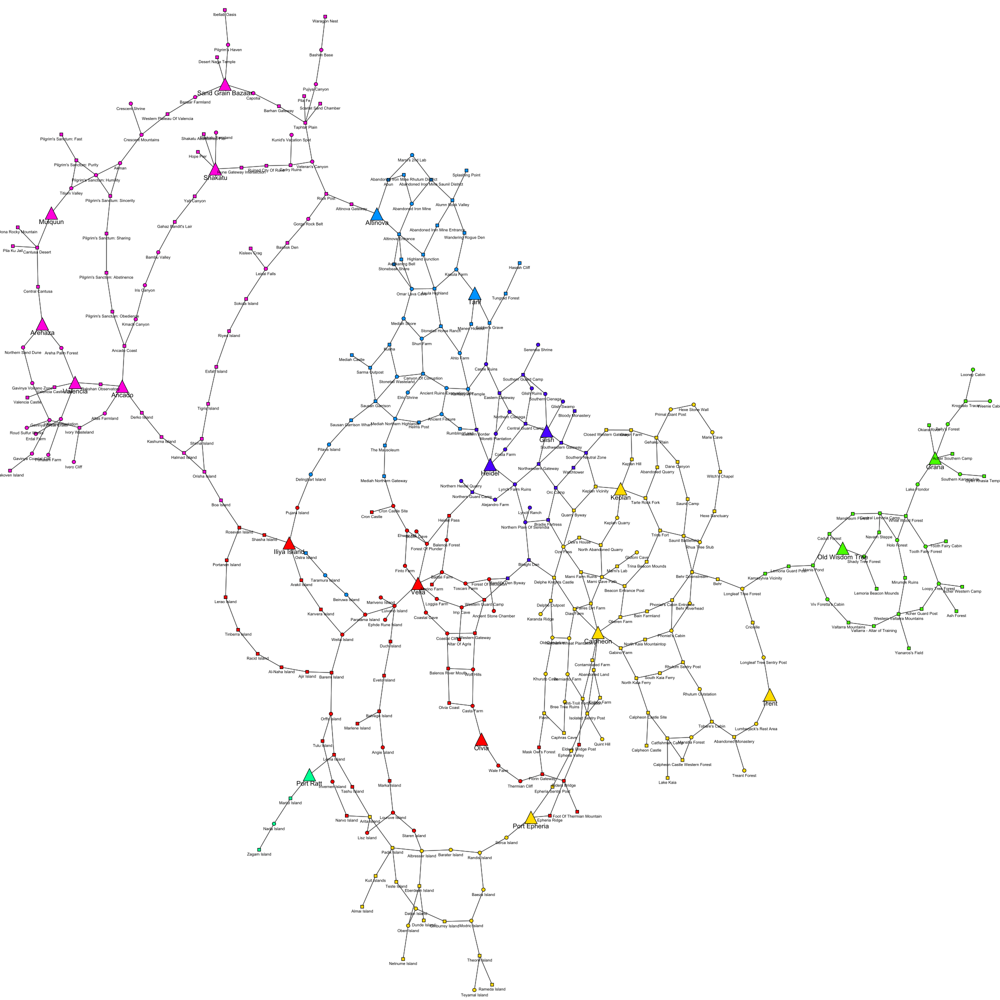

Table of contents
- Introduction
- Obtaining the data through web scraping
- Exploratory analysis
- Optimization (in progress)
- Interactive world map (in progress)
- Information
Introduction
This is a personal project of mine where I attempt to optimize the worker system in the online MMORPG Black Desert Online using Python. This was my first time using Python having used R throughout my college years.
The worker system consists of a map of main nodes and their subnodes that can be reached by connecting together nodes starting from a city. For a more detailed/accurate map see: Famme’s BDO map. Below is a simplified map of the in-game node network where colors denote different regions in the game and shapes denote node type.

The following information is taken directly from the game wiki.
(Main) Nodes
Nodes can be activated by investing Contribution Points at the Node Manager. If two adjacent ones are activated the nodes become connected. If all the nodes between two towns are connected it allows automatic transport between their warehouses for a lower price (otherwise one pays 3x the fee) and manual trade between them for full pricing (otherwise you only received 30% of the item price).
Furthermore activating a node allows you to invest Energy into the node which in turn gives you bonuses in the node area such as more loot drops.
Activating a node is also necessary to automatically assign workers to gather resources from resource nodes and bring them back to the region’s warehouses. Certain nodes not only have regular resource nodes attached to them but can have additional hidden nodes too. The latter become available at the Node Manager if one talks to it and pays 35 Energy. Afterwards they are unlocked for workers. Hidden nodes offer special resource gathering for workers, like the excavation node at the Ancient Stone Chamber for Trace of Earth and Trace of Ascension.
Subnodes
Resource nodes are places you can send your workers to gather resource or make financial investments for you.
Each resource node belongs to a location node. Before you can assign workers to a resource node its location node needs to be connected with a node where you have purchased lodging for a worker. Farms, Forests and Mines belong to Trading Posts, Connection nodes and Dangerous nodes. Investment nodes can be found at Village nodes.
Workers
There are three types of workers: Goblin, Human and Giant.
Goblin workers have fast work speed and movement speed, so they finish work in the fastest time. They have the lowest stamina out of the three species of workers so they need to be maintained more often.
Giant workers have the highest stamina so they can work for longer. The Giants movement speed is the lowest and they have the second highest work speed. Giants require less maintenance.
Human workers are the jack of all trades with average work speed, movement speed, and stamina.
Your workers are divided into 5 categories that represent their skill/grade. They’re shown with various colors. The higher the quality/tier the better base stats the workers will have. The qualities are: Naive (white), Basic (green), Skilled (blue), Professional (yellow) and Artisan (orange).
Information
I quit this game back in March 2017 so updates after then are completely new to me. This includes the new workers Papu(?) as well as most of the Kamasylvia region. As such, some information may be dated (or at least as accurate as Black Desert Tools by Dae).